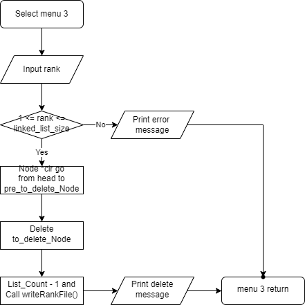
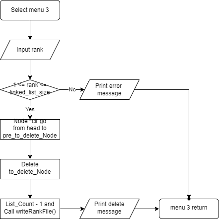

Hello! This is my first HTML file!
Nice to meet you!
김치
Han seok gi
Hello this is my website
Hello this is my website
Hello this is my website
Hello this is my website
Hello this is my website
Hello this is my website
- beer
- 김치
- meat
- milk
Go to google.com
Go to google.com
 
